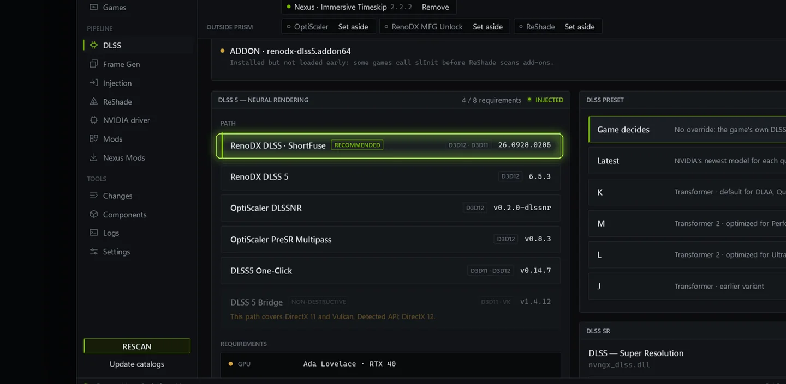

DLSS 5
Neural rendering, injected.
On DirectX 12, OptiScaler DLSS 5 in one click: the neural pass inside the game's pipeline for a fraction of its usual cost, no ReShade needed. Or the RenoDX DLSS package with DLSS 310.9.1 and Streamline 2.14.1. The neural runtime is matched to your GPU and every NVIDIA file is checked before it is written. The recommended path is picked for your game.
